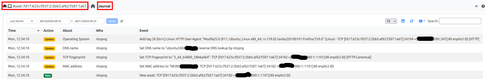

12. Журнал активов
Инвентаризация активов сохраняет текущее состояние хостов, видимых на сеть. журнал активов записывает, как это состояние изменилось с течением времени: одна запись для каждого события (создание или удаление актива, изменение поля, тег добавлено или удалено), с ВОЗ вызвало это и почему.
Примечание
Эта функция доступна только в лицензии Enterprise L, при этом активы инвентарь включен.
По умолчанию журнал отключен. Его можно включить из Настройки > Настройки > Анализ поведения (раздел Ресурсы), с Включить журнал активов предпочтение. Когда он включен Базовый уровень запись пишется для каждого актива уже в инвентаре; пока он отключен, ничего не записывается, а когда он снова включен новый Базовый уровень написано.
12.1. Просмотр журнала
Журнал отображается в двух местах:
Журнал вкладка Инвентаризация активов страница (Сеть меню, см. Инвентаризация активов): события всех ресурсов выбранного интерфейса.
Журнал вкладка страницы сведений об активе: события этого актива только.

Вкладка «Журнал» на странице «Инвентаризация активов».


Вкладка «Журнал» на странице сведений об активе.
Каждая строка представляет собой событие, сначала самое новое:
Время: когда произошло событие.
Объект: актив (только в Инвентаризация активов страница). Нажмите, чтобы открыть его детали.
Действие: Базовый уровень, Новый, Обновлять, Удалить или Примечание (см. ниже).
О: что изменилось, например. MAC-адрес, DNS имя, TCP отпечаток пальца, Операционная система или Ярлык. Пусто, когда событие об активе в целом.
ВОЗ:
ntopngдля событий, обнаруженных автоматически, в противном случае пользователь, вызвавший событие (например.adminдля тега, установленного вручную).Событие: что произошло и почему (см. Причины). Для события, увиденного в трафик, он показывает поток (соединение), где он был замечен.
По умолчанию отображается последний месяц: выберите другой интервал времени с помощью значка селектор над таблицей и нажмите Применять. По таблице можно осуществлять поиск ( IP-адрес актива, пользователя, действия, поддействия и значений событие), а отображаемые столбцы могут быть выбран с помощью значка глаза.
Вкладки доступны только при включенном журнале (см. выше): в противном случае они отключены, и во всплывающей подсказке указано, как их включить. Без предприятия L лицензия, во всплывающей подсказке написано, что необходимо обновление.
12.2. Записи
Каждая запись имеет:
Время события: когда произошло событие (эпоха).
Время создания: когда запись была написана (эпоха).
ВОЗ:
ntopngдля событий, обнаруженных автоматически, в противном случае имя пользователя, вызвавшего событие из GUI или REST API.Действие: см. ниже.
Поддействие (О в GUI): о чём запись:
os( теги операционной системы),tag(остальные теги), имя поля (ip,mac,vlan,tcp_fingerprint,dhcp_fingerprint,dns_name,kerberos_name),usernames(имена пользователей хост), пусто для актива в целом (Базовый план, Создать, Удалить, Вручную).Объект: идентификатор интерфейса, тип актива (
host) и его ключ, как и в описи имущества.Сообщение: что произошло, и его причина.
Действия:
Базовый уровень: актив уже находился в запасах, когда журнал был включен (одна запись для каждого актива, без подробностей).
Новый: актив создан. За записью следует один Обновлять запись для каждого поля со значением (кроме тех, которые находятся в ключе актива, т. е. IP-адрес и VLAN) и для каждого тега нового актива.
Обновлять: одно свойство актива изменено или было добавлено/удалено (т. е. установлен новый тег или изменен отпечаток пальца).
Удалить: ресурс был удален.
Руководство (Примечание в GUI): произвольная текстовая заметка, написанная пользователем или интеграцией.
В настоящее время записаны следующие поля хост-активов: IP-адрес, MAC-адрес. адрес, VLAN, TCP отпечаток пальца, DHCP отпечаток пальца, DNS имя, машина Kerberos учетную запись, имена пользователей и теги. Имя хоста не записывается, т.к. оно образовано от других имен хоста (DNS, DHCP, mDNS, …).
Имена пользователей — это пользователи, видимые в трафике хоста, каждый из которых имеет
протокол, с которым он был замечен (например. alice@corp.local (Kerberos),
клиент аутентификации Kerberos, принимаемой KDC). Хозяин оставляет 3
самые последние: новый заменяет тот, который видели совсем недавно. Каждое имя пользователя
Добавление или удаление имеет свою собственную запись и причину.
12.3. Причины
В сообщении всегда указывается причина события со всей информацией. доступен. Событие, вызванное трафиком, сообщает о потоке, в котором оно было замечено, с интерфейсом, который его видел (с интерфейсом просмотра, просматриваемый интерфейс, которому принадлежит поток):
New asset: UDP 192.168.1.93:51409->192.168.1.1:53 eth0 (0)
Set MAC address to "10:13:31:F1:39:76": UDP 192.168.1.93:51409->192.168.1.1:53 eth0 (0)
Add tag 0 (0x00) DNS Server: UDP 192.168.1.93:52340->192.168.1.1:53 eth0 (0) [DNS]
Add tag 13 (0x0d) Non-PQC Compliant: risk Non PQC Compliant Flow - TCP 192.168.1.93:61562->92.122.247.92:443 eth0 (0) [TLS]
Update TCP fingerprint from "2_128_64240_47466ece" to "2_64_64240_789c1d1f": TCP 172.16.1.137:39970->116.203.142.127:80 eth0 (0) [HTTP.ntop]
Remove tag 31 (0x1f) Windows: replaced by tag 28 (0x1c) Linux, Linux (TCP Fingerprint) - TCP 172.16.1.137:39970->116.203.142.127:80 eth0 (0)
Add username dave@corp.local (Kerberos): UDP 10.0.0.5:50012->10.0.0.1:88 eth0 (0) [Kerberos]
Remove username alice@corp.local (Kerberos): replaced by dave@corp.local (Kerberos) - UDP 10.0.0.5:50012->10.0.0.1:88 eth0 (0) [Kerberos]
Поток показан как <protocol> <client>-><server> <interface name> (<interface id>) [<application>],
приложение только тогда, когда оно известно. Когда причина имеет другие доказательства
чем поток (риск метки, связанной с риском, отпечаток пальца или
Пользовательский агент, из которого была извлечена операционная система) доказательства на первом месте,
после чего следует тире (-) и поток.
Поток Новый запись — это первый поток хоста (того, который имеет создал его), показан без приложения, так как еще не было известно, когда хост был создан.
Другие причины:
Событие |
Пример |
|---|---|
Тег установлен или отключен пользователем на хосте |
|
Тег удален. |
|
Срок действия тега истек (см. Срок действия тега актива (TTL)) |
|
Тег хоста в конфигурации сети |
|
Имя решено ntopng |
|
Актив удален пользователем |
|
Активы, которые некоторое время не просматривались, удалены |
|
Дублирующийся объект удален. |
|
Импортированные активы |
|
12.4. Хранилище
Записи сохраняются в assets_journal таблица, в ClickHouse, когда
доступен, в противном случае — в базе данных SQLite интерфейса. Записи
никогда не удалял: не за счет хранения данных и не тогда, когда их актив
удалено, поэтому история удаленного актива по-прежнему доступна.
Помимо Журнал вкладки (см. Просмотр журнала), записи Актив также можно прочитать с помощью SQL, например. с ClickHouse:
SELECT event_time, who, action, subaction, message_id, message_values, message
FROM ntopng.assets_journal
WHERE ifid = 0 AND key = '0_192.168.1.1@0'
ORDER BY event_time, created_time
Сообщения сохраняются в виде шаблона (message_id) и его значения
(message_values, JSON) и отображается на языке пользователя; свободный текст
заметки хранятся в message.
12.5. Луа API
Журнал можно читать и писать с помощью кода Lua (например, посредством интеграции) с помощью
assets_journal модуль (pro/scripts/lua/modules/assets_journal.lua):
assets_journal.get(ifid, key, from, to): записи актива в интервал времени (эпохи в секундах, включая оба конца), сначала самый старый, с текстом своих сообщений.assets_journal.add(entry)иassets_journal.addBatch(entries): напишите одну или несколько записей. Их можно вызывать одновременно, никогда не поднимать ошибку и ничего не делайте, пока журнал отключен. Запись имеетaction(assets_journal.actions), необязательноsubaction(например, имя интеграции) и либо произвольный текстmessageили шаблон (message_id,message_values).
Запись, написанная интеграцией:
local assets_journal = require "assets_journal"
assets_journal.add({
ifid = 0,
key = "0_192.168.1.1@0",
who = assets_journal.currentUser(), -- "ntopng" outside of a request
action = assets_journal.actions.manual,
subaction = "wazuh",
message = "Moved to the server room",
})